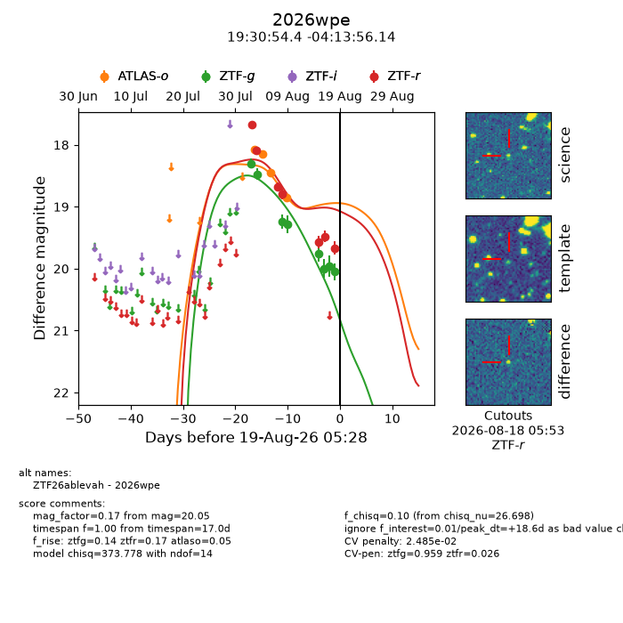
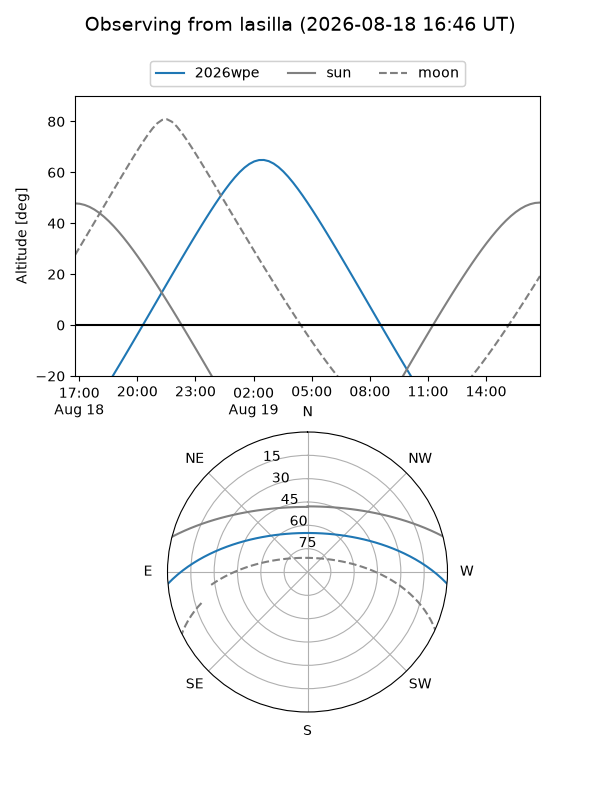
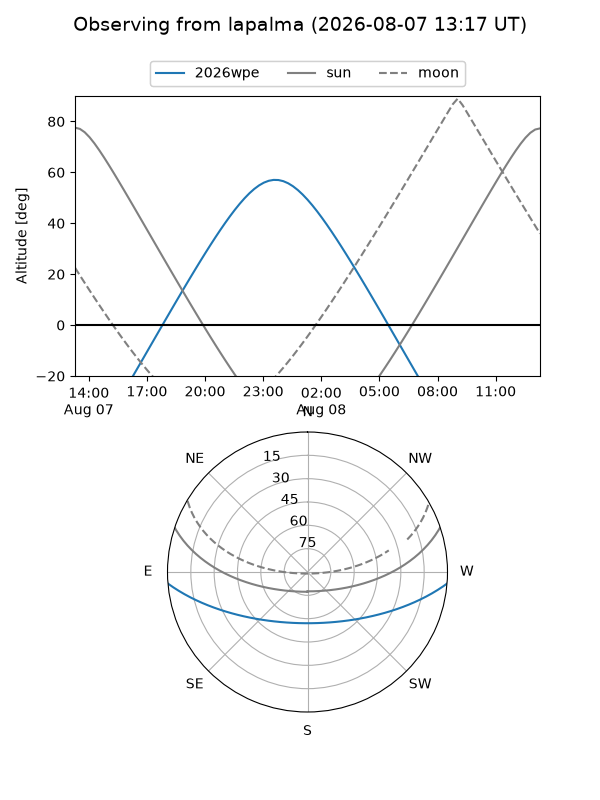
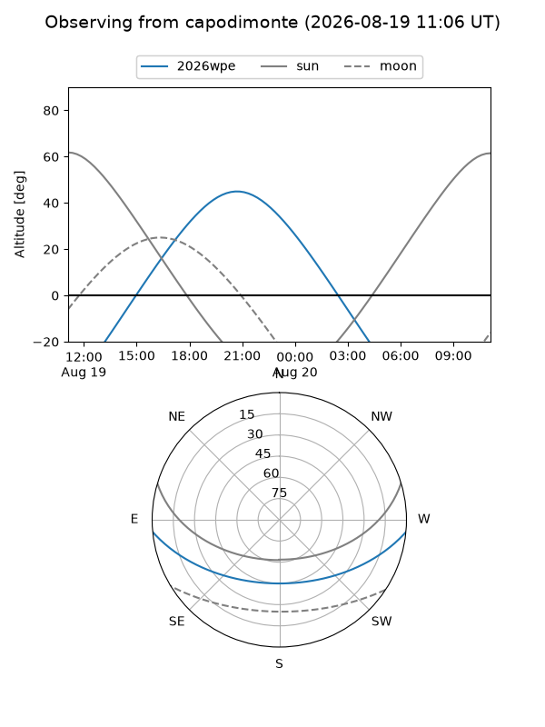
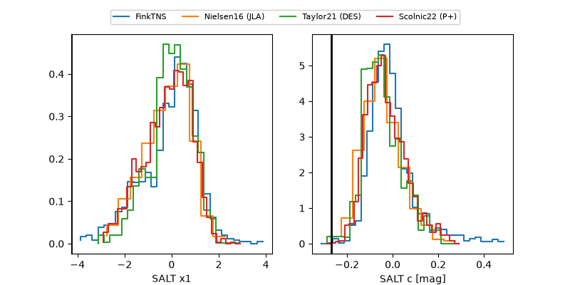

2026wpe
Target 2026wpe at 2026-08-19 05:31
Aliases and brokers:
FINK-ZTF: ztf.fink-portal.org/ZTF26ablevah
Lasair-ZTF: lasair-ztf.lsst.ac.uk/objects/ZTF26ablevah
ALeRCE-ZTF: alerce.online/object/ZTF26ablevah
YSE-PZ: ziggy.ucolick.org/yse/transient_detail/2026wpe
TNS name: wis-tns.org/object/2026wpe
Direct TNS query: direct search
alt names
ZTF26ablevah (ztf,fink_ztf)
2026wpe (tns,yse)
Coordinates:
equatorial (ra, dec) = 292.7267,-4.23226
equatorial (HMS+DMS) = 19:30:54.42,-04:13:56.14
galactic (l, b) = (33.6460,-10.70483)
Flags:
TNS type: nan
peak dt: +18.6
likely cv: !!
Photometry:
last atlaso=18.86, ztfg=20.05, ztfr=19.67
4 atlaso, 8 ztfg, 7 ztfr detections
Lightcurve

Visibility



Additional plots
